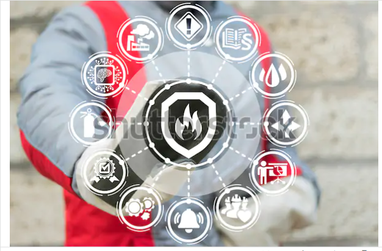

1. Health and Safety Consulting
Well performing companies keep a good balance between compliance and costs. We help you in complying with the many rules and regulations in the areas of safety and the environment, and at the same time we have experience to advise you the best industrial practices. We are not an authority. We are committed supporting you with our advice, rather than penalize.

első kép2. EHS auditing, compliance
Well performing companies keep a good balance between compliance and costs. We help you in complying with the many rules and regulations in the areas of safety and the environment, and at the same time we have experience to advise you the best industrial practices. We are not an authority. We are committed supporting you with our advice, rather than penalize.
3. Fire Safety
Preventing a fire is always a better solution than extinguishing it. Employers need to do many things to comply with laws and regulations, but should a fire occur, they need to react and take very expensive actions. Prevention is necessary and companies must also comply with legal requirements. To prevent a fire you need more than just words; elements of prevention need to be integrated into day-to-day activities. Besides, it must be constantly maintained and effectively monitored. Consultants of Anzenta help to improve your fire prevention preparedness, provide an assessment of your system and facilities. We periodically report back to you about the performance of your fire safety organization. The system cannot be complete without staff training, based on our wide range of experiences, we are able to supply varied and useful fire safety trainings for your teams in different platforms. With the comprehensive capabilities of our safety professionals, we offer a full range of fire safety services and support your risk management activities. With our assessments and audits, you can be prepared for authority inspections and proceedings. Our fire safety services cover these types of activities: - Fire Risk Assessments Our risk assessments take into account all aspects of fire possibilities within the facilities and specify the measures to keep the safe working environment. - Fire Safety Audits and Management System In connection with the facilities’ responsible person, we conduct comprehensive fire safety audits. It helps to create a suitable and sufficient fire safety management system with client-tailored documentation. - Company’s Fire Safety Regulation Regardless of the size and complexity of your facilities and activities, we establish fire safety procedures, which are the base of safe corporate processes and compliance with legal requirements. It covers fire safety organization and policy, system of training, regulation for the premises, arrangements for inspecting, testing and maintaining fire safety infrastructure and equipment. - Effective Emergency Evacuation Plan and Fire Drills The intent to prepare an emergency evacuation plan and organize fire drills is to ensure that everyone in the premises understands how a fire will spread, and what the people need to do to have the building evacuated as quickly as it is possible. This plan needs to be harmonized with the building’s specification, the number of workers and the environment. Anzenta safety professionals have all the experience and knowledge necessary to assess the specifics of the local facilities and develop effective emergency plans. It is our belief that without practice, no system will work, therefore regular training and the organisation of fire drills is indispensable.
4. EHS trainings
Workplace safety training is an essential and critical part of a successful safety management system. In general, the workers must be up to date with the risks affecting them daily. A well-managed workplace safety training program can be the most useful tool in educating employees and ensuring that they learn the latest safety practice and are motivated to always work safely. Anzenta offers a wide range of safety training from basic legal compliance to client tailored on-line solutions.
5.Technical and Environmental Due Diligence for mergers and acquisitions, licence to operate support for investors
Environmental liabilities, and unforeseen technical conditions are common reasons for incurring unexpected expenses in connection with the purchase of a commercial property. Our environmental and technical due diligence services give you quick and professional information about potential technical and environmental risks and threats and help you to make smart decisions on property transactions, site development, and mergers and acquisition. Moreover, if you are satisfied with our services, we are happy to help you to identify all necessary permits of your operation. We have done it several times and are looking forward to proving it to you.